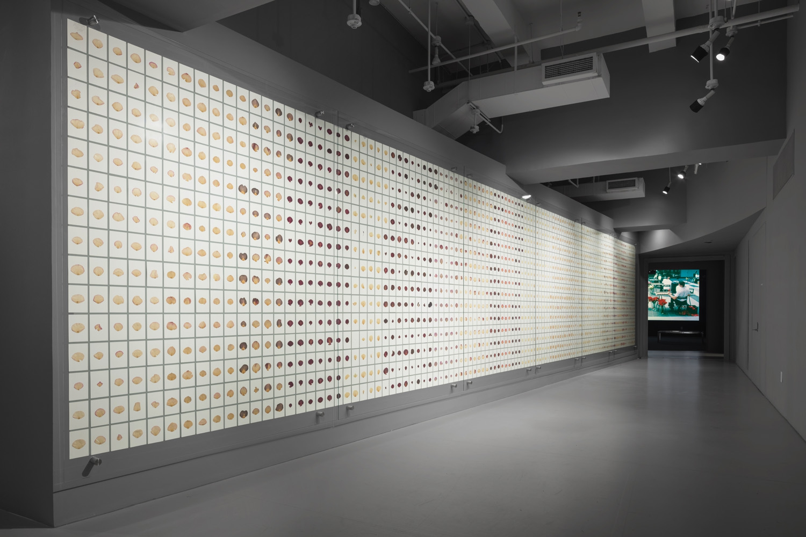
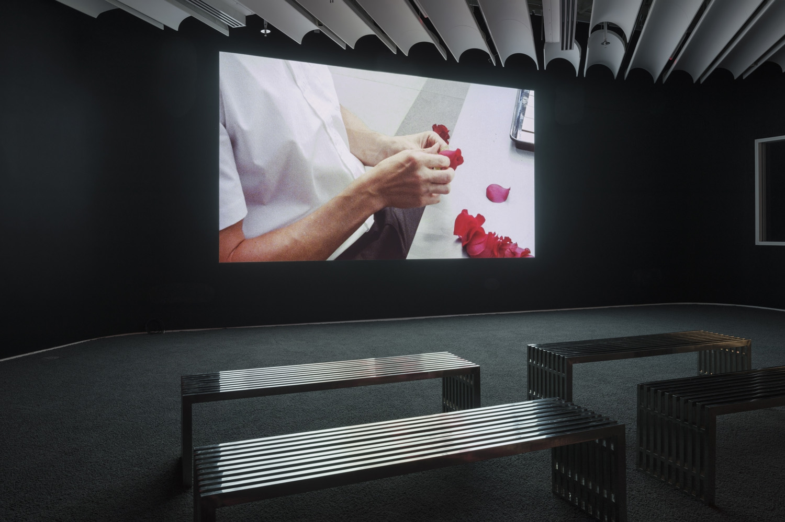
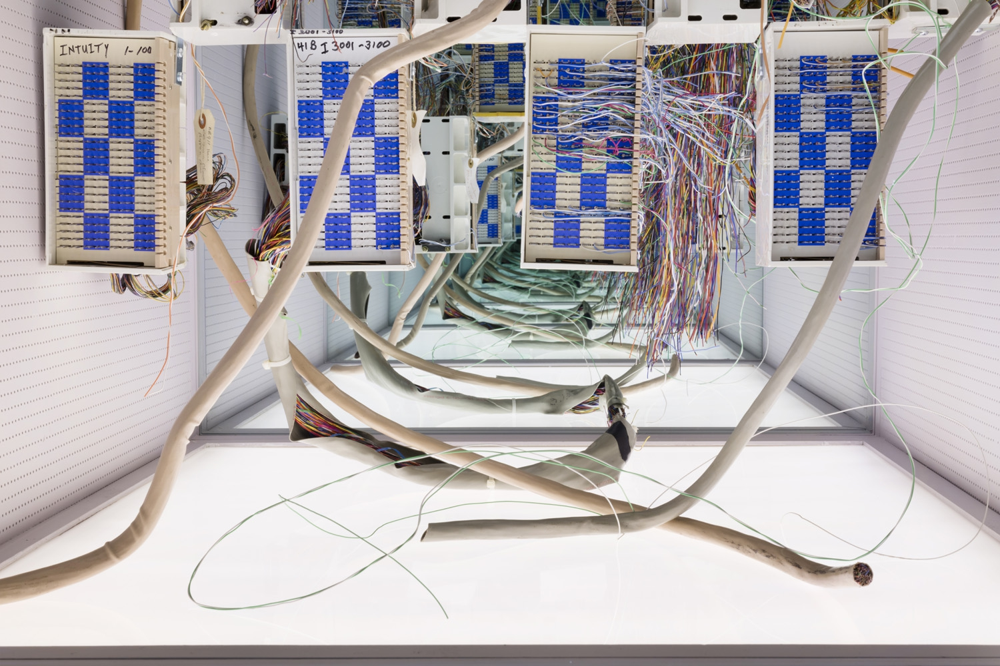
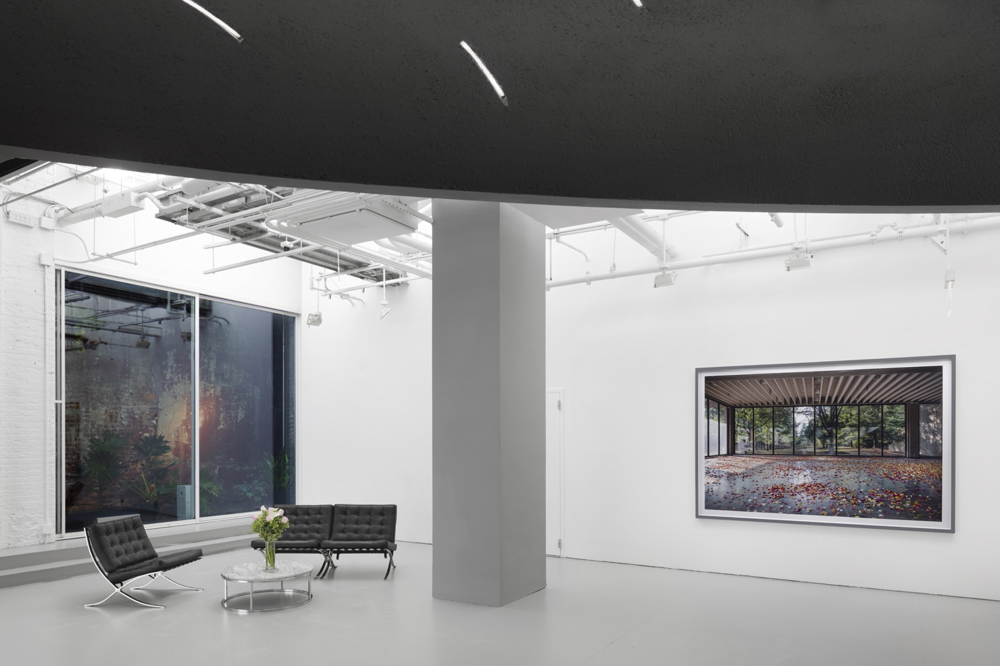
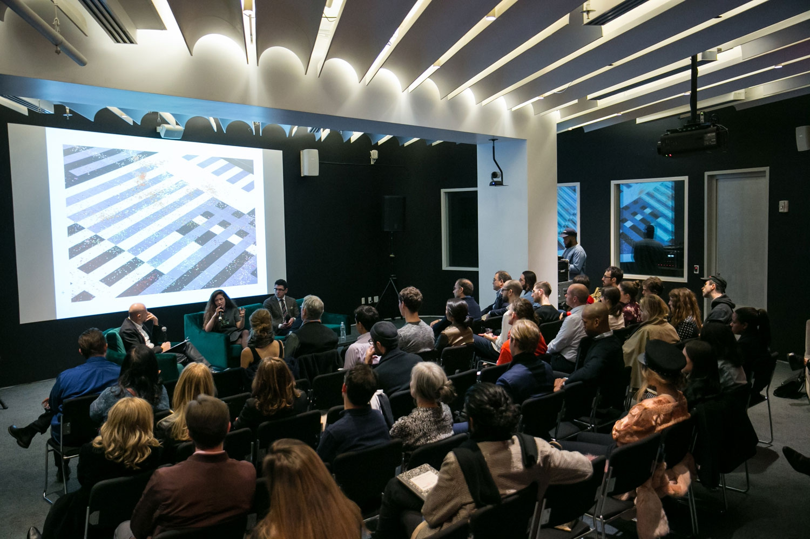
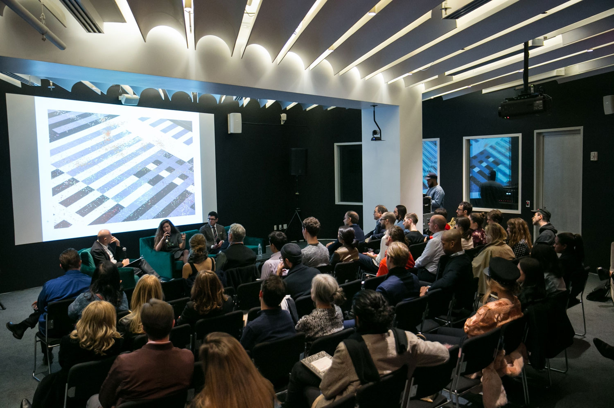

Cloud of Petals presented Sarah Meyohas’s first large-scale exhibition and virtual reality initiative. Meyohas investigated the artificiality of beauty by enlisting the faculties of human subjectivity through a body of work that integrated sculpture, photography, artificial intelligence, and organic matter.

nstallation view of Sarah Meyohas: Cloud of Petals at Red Bull Arts New York, 2017. Photo by Lance Brewer.
Installation view, Most Beautiful Petals, archive wall of 3,289 petals, Cloud of Petals. Photography by Lance Brewer, 2017.

Installation view, Most Beautiful Petals, archive wall of 3,289 petals, Cloud of Petals. Photography by Lance Brewer, 2017.
Installation view, Cloud of Petals, Film, Cloud of Petals. Photography by Lance Brewer, 2017.

Installation view of Sarah Meyohas: Cloud of Petals at Red Bull Arts New York, 2017. Photo by Lance Brewer.
Bell Vitrines salvaged modular wall panels from Bell Labs, 87” x 37.5”, 2-way mirror, LED Lighting.
Bell Vitrines salvaged modular wall panels from Bell Labs, 87” x 37.5”, 2-way mirror, LED Lighting.

Installation view, Bell Vitrines salvaged modular wall panels from Bell Labs, 87” x 37.5”, 2-way mirror, LED Lighting.

Installation view, Cloud of Petals, 99 x 69”, chromogenic print. Photography by Lance Brewer, 2017.
ARTIST BOOK
Cloud of Petals (2016)
This limited run publication showcases Meyohas’ first large-scale presentation and provides insight into her multifaceted practice. With contributing essays written by Samuel Loncar, with a piece called “Ascending to the Cloud: Art after Humanity,” and "The Invisible Production Line: Data Labor and Corporate Aesthetics" by curator and cultural critic Jeppe Ugelvig.
PROGRAMS
The accompanying public program brought together a conversation between Meyohas, Trevor Paglen, and philosopher Samuel Loncar.
 
